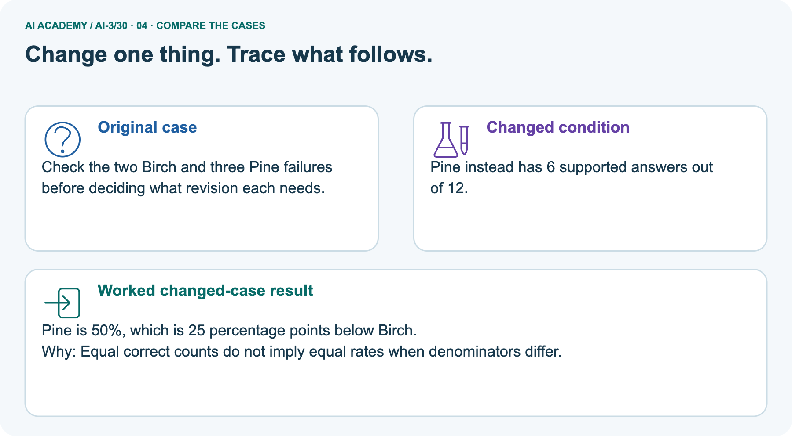
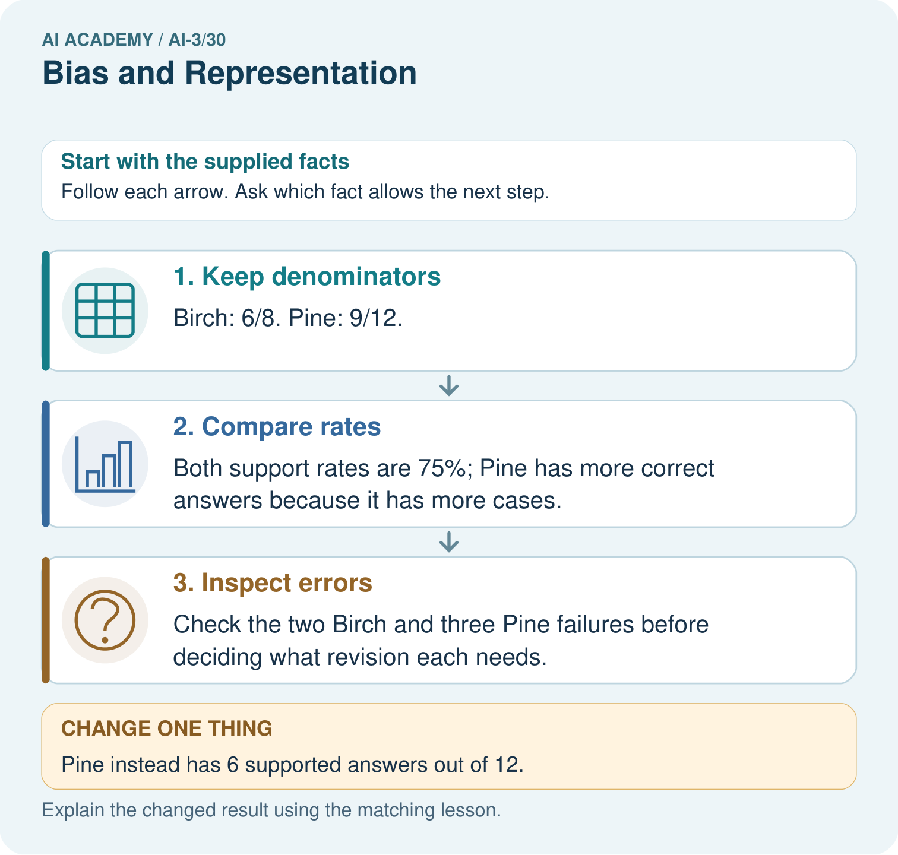
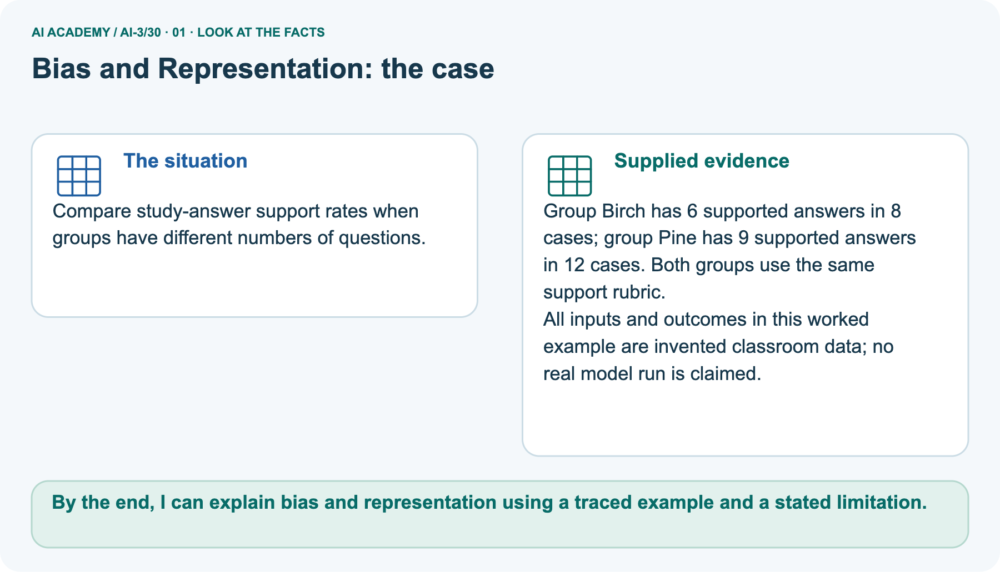
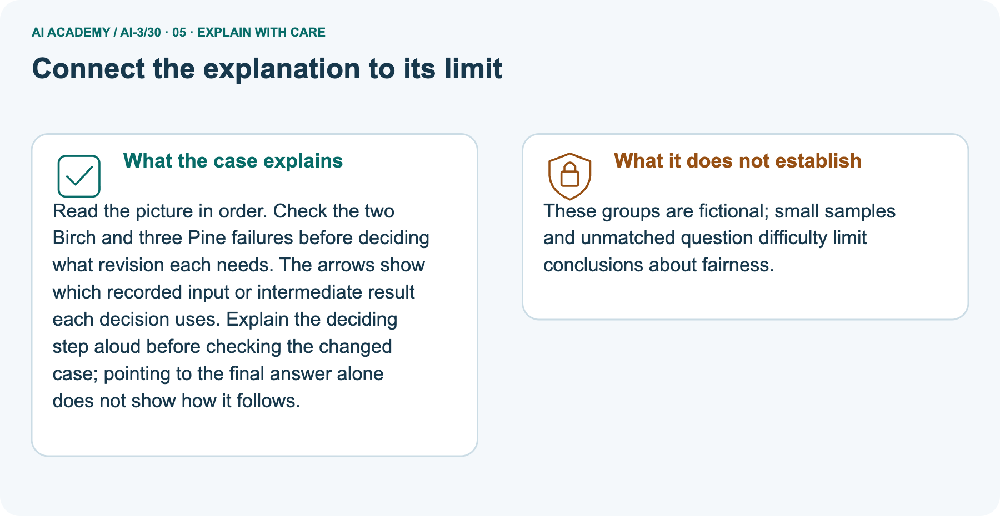
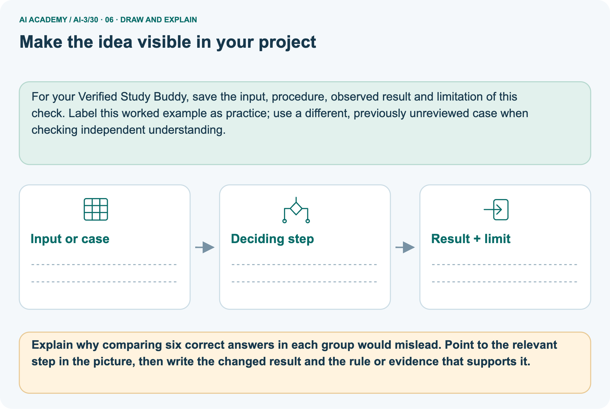

AI Academy · Level 3 · Grade 8 · Week 30 · Student lesson
Bias and Representation
Learn to understand, design, build, test and explain AI systems responsibly.
Project: Verified Study Buddy
THE CONNECTED WEEK
Define the task. Keep the denominator. Inspect the missing cases.
Audit representation and uneven quality without treating counts as causal explanations.
Keep one habit: Audit contract → Birch/Pine rates → six paired outputs → error inspection → independent C/D comparison.
Main lesson · Section 1
Whose cases are represented, and what does quality mean?
Compare defined outcomes without inventing an explanation for a difference.
Your learning goals
I can explain the mechanism and terminology of representation and bias evaluation.
I can apply the stated procedure to a new case with a traceable result.
I can identify an assumption or limitation and design a revealing follow-up.
Recall criteria and denominators
Close your notes first. A rough first answer helps us choose the right starting point; it is not a score for your ability.
Recall Quality Rubrics and Evaluation Sets: declare the quality criterion and denominator before comparing outputs. Equal totals can hide different rates, and equal rates can hide different error types.
Your end goal
By the end, I can explain bias and representation using a traced example and a stated limitation.
Earlier wording, alternatives and picture transcripts
Your learning target
Remember before reading
Without opening the old lesson, explain one key idea from Copyright and Provenance. Give an example and a mistake that the idea helps you avoid.
Without opening the old lesson, explain one key idea from Red Team the Product. Give an example and a mistake that the idea helps you avoid.
Without opening the old lesson, explain one key idea from Prototype a Grounded Assistant. Give an example and a mistake that the idea helps you avoid.
After trying, check the relevant lesson or ask your teacher. Change the part of your explanation that the evidence shows was wrong.
Week 30: Bias and Representation
Outputs should be tested for omission, stereotyping, and uneven quality.

CREATOR MISSION
Audit a character generator across varied prompts.
Creator name and date:
Readiness for the connected explanation
This week’s end goal
Main lesson · Section 2
Define the task before interpreting a group difference
A count, a rate and a causal explanation are different claims.
Understand representation and outcome audits
Representation asks which situations and perspectives appear in a dataset or output set, and which are missing. A bias audit examines defined patterns such as omissions, unsupported assumptions or uneven task quality. Group rates can reveal a difference worth investigating, but they do not identify its cause or settle every fairness question.
Use fictional, non-identifying practice records and criteria tied to the task. Do not infer a person’s identity from a name or appearance.
Bias evaluation tests defined outcomes across relevant conditions. Group averages can expose differences but cannot alone establish their cause or the correct remedy.
Use supplied fictional records
Begin by writing the question the procedure is intended to answer. Identify the information already supplied, the information it will produce and the information still missing.
These are constructed classroom examples; they do not require live accounts, private records or an external service. Do not treat a plausible explanation as a measured outcome.
Earlier wording, alternatives and picture transcripts
PICTURE STORY
Notice → Predict → Explain
Begin with visible evidence. Do not explain more than the picture and information support.
MYSTERY
The learners must use bias and representation to solve a problem. What information do they have? What decision or calculation do they make? What would count as evidence that it worked?
Three observations (what you can point to):
My prediction and the clue supporting it:
A closer explanation
Main lesson · Section 3
Write the comparison contract before scoring
Keep small samples and unknown case differences visible.
The complete audit checklist
| Audit question | What to preserve |
|---|---|
| Task and outcome | What counts as supported, useful or complete for this question? |
| Groups or conditions | Why are these labels relevant; what do they actually mean? |
| Denominators | How many cases in each group and how many pass? |
| Error types | Which exact claims, omissions or fallbacks failed? |
| Case comparability | Difficulty, source coverage, prompt wording and annotation rules |
| Bounded conclusion | Observed difference or missing coverage; no invented causal story |
| Proposed revision | One controlled change and a fresh matched retest plan, not an invented improvement |
Define the task, relevant groups, labels and denominators before comparing. Use fictional, non-identifying records. Evaluate quality and fallback outcomes separately; preserve sample sizes and unresolved explanations.
Respect scope and missing inputs
Before applying the procedure, write its units, denominator or decision boundary where relevant. A partner should be able to repeat each step using the same inputs.
If a required input is absent or violates the stated contract, record that condition explicitly instead of quietly replacing it with a convenient value.
Explain the deciding check
Point to the input, the deciding step and the result in this week’s visual. Explain the same step in ordinary words. A picture helps when you can say what each part represents.
Earlier wording, alternatives and picture transcripts
VISUAL MECHANISM
Input → Process → Output
Trace the information. At each stage, ask what changed and how you could test it.

↓

↓

Which stage could fail even when the other two are correct? Explain:
A closer explanation
Representation and bias evaluation — evidence trace
Connect the picture and the explanation
Main lesson · Section 4
Compare raw totals, rates and error patterns
A larger group can have more successes and a lower success rate.
Four pictures with a purpose

Normal case: predict the result and deciding evidence.

Boundary case: identify the exact limit.

Missing information: name what must be clarified.

Transfer case: explain which procedure still applies.
Choose a revealing case
Which case is most likely to reveal a hidden assumption? Why?
Predict the supplied changed case
Change: Pine instead has 6 supported answers out of 12.
Check after predicting
Prediction: Pine is 50%, which is 25 percentage points below Birch.
Reason: Equal correct counts do not imply equal rates when denominators differ.
Earlier wording, alternatives and picture transcripts
CASE GALLERY
Four Tests, Four Kinds of Evidence
A system is not understood until it survives more than one comfortable example.
NORMAL CASE: predict and name evidence. BOUNDARY CASE: predict and name evidence.
MISSING INFORMATION: predict and name evidence. TRANSFER CASE: predict and name evidence.
Change one thing in the pictured case
Main lesson · Section 6
Trace why equal rates can have different counts
Preserve the group sizes before interpreting the result.
Read the complete Birch/Pine outcomes
Compare study-answer support rates when groups have different numbers of questions.
Group Birch has 6 supported answers in 8 cases; group Pine has 9 supported answers in 12 cases. Both groups use the same support rubric.
All inputs and outcomes in this worked example are invented classroom data; no real model run is claimed.
Birch and Pine are arbitrary fictional case-group labels, not demographic descriptions. Birch 6/8 and Pine 9/12 both equal 75%; failures are 2 and 3. Changed Pine 6/12 is 50%, 25 percentage points below Birch. A percentage-point gap subtracts rates: 75%-50%=25 points; it is not the same as a relative percent change. No source coverage, difficulty matching or causal mechanism is supplied.
Trace denominators, rates and failures


Read the picture one step at a time
Read the picture in order. Check the two Birch and three Pine failures before deciding what revision each needs. The arrows show which recorded input or intermediate result each decision uses.
Explain the deciding step aloud before checking the changed case; pointing to the final answer alone does not show how it follows.
Predict the revised Pine count
Change one thing: Pine instead has 6 supported answers out of 12. Predict the result before checking the explanation. What remains the same?
Check after predicting



State small-sample and matching limits
These groups are fictional; small samples and unmatched question difficulty limit conclusions about fairness.
Read the labelled picture: Explain why comparing six correct answers in each group would mislead. Point to the relevant step in the picture, then write the changed result and the rule or evidence that supports it.
Separate practice · A/B support rates
A grounded assistant supports 9 of 10 group-A cases and 6 of 10 group-B cases.
Rates 90% and 60%; gap 30 percentage points. Investigate case mix, retrieval coverage and annotation rules before attributing cause.
Earlier wording, alternatives and picture transcripts
WORKED EVIDENCE
Reason Step by Step
Predict first. Then check each step. A correct answer without visible reasoning is incomplete evidence.

1. Generate comparable characters while changing one identity descriptor.
2. Count omissions, stereotyped roles, and quality differences.
3. A balanced count does not alone prove respectful depiction.
4. Repair prompt, data, filters, or use limits, then repeat the fixed audit.
Recalculate, retrace, or restate the reasoning in your own representation:
CHECK Did the evidence answer the exact question? Did the total, path, or source record stay consistent?
A closer explanation
Compare the intermediate evidence with the final statement. Explain why each number or decision follows from the stated inputs.
The conclusion belongs to this scenario and procedure; changing the inputs, evaluation population or authority can change what it establishes. Retain the raw record so a later revision can be compared honestly.
Learn from the worked case
Cover the result before checking it. Say what is given, choose the procedure, and follow one step at a time. Then uncover the result and explain your first mismatch. Ask why a step is allowed, not only what number it produces.
A pictorial worked case: Bias and Representation
The facts we will use



Why this result follows
What this example does not establish
Main lesson · Section 7
Find the denominator or causal shortcut
State what the record shows before proposing explanations.
Repair the raw-total and no-bias claims
Claim to repair: Pine has nine successes and Birch six, so Pine quality is higher. Rates are equal in the base case because group sizes differ. Another shortcut is saying equal 75% rates prove no bias: failures, coverage and affected conditions still need inspection.
In the changed case a rate gap is observed, but the counts alone cannot tell whether source coverage, case mix, annotation or another factor produced it.
Design a revealing follow-up
Earlier wording, alternatives and picture transcripts
ERROR DETECTIVE
Compare → Diagnose → Repair
Do not patch the answer. Find the earliest unsupported assumption, wrong step, or weak evidence.

| Evidence record | Expected | Actual | Likely cause / next test |
|---|---|---|---|
| normal case | works | ||
| boundary case | stated rule | ||
| missing input | safe response | ||
| fresh transfer | generalizes |
Repair one cause. Why is this repair better than changing several things?
A closer explanation
Complete the supported workbook tasks before attempting W4 independently. Record any hints or help used. After feedback, use the teacher's fresh retry rather than copying the earlier answer.
For a project, select a relevant new case, predict the outcome from the declared rule and preserve the result alongside any revision.
Main lesson · Section 8
Practise the A/B support-rate comparison with less help
Keep these ten-per-group cases separate from Birch/Pine.
The causal and governance limit
Group comparisons require task relevance and appropriate data governance; differences alone do not identify a causal mechanism.
Complete the 9/10 versus 6/10 W2
Practise with less help: Trace the worked case
Use workbook W2 for the connected example “Representation and bias evaluation”. First fill the input and rule boxes. Try the middle steps before asking for a hint. After a hint, try the next step yourself.
| Plan | Do | Check |
|---|---|---|
| What is given? Which rule or procedure applies? | Record each intermediate step. | Does the result follow? What remains unknown? |
Audit an all-future-cases claim
Use the worked case for Representation and bias evaluation. Proposed explanation: “The worked result establishes every future case”. Decide whether this explanation is supported.
Point to the step or supplied fact that decides; explain your repair if needed.
Answer on your own before discussion. If you are unsure, say which step you need help with.
Check your reasoning
Explain the pictured denominator change
Explain why comparing six correct answers in each group would mislead. Point to the relevant step in the picture, then write the changed result and the rule or evidence that supports it.
Explain the picture
Keep independent work separate
This is supported practice. Keep the separately named independent case for an attempt before feedback.
Earlier wording, alternatives and picture transcripts
LOGIC STUDIO
Specify Before You Run
Prompts, schemas, retrieval, tool calls, and code are inspectable parts of one AI product.

SET task, audience, constraints, output_schema LOAD approved_context or retrieval_result CALL model or allowed_tool VALIDATE fields, claims, citations, and safety IF evidence missing: ask, retrieve, or abstain RETURN useful output + source trail + limitations
Trace one input. Which line changes the state or chooses a path?
A closer explanation
A useful check asks what would make the reasoning fail. Distinguish a failure to execute the declared procedure from a weakness in the procedure itself.
The first may require a correction; the second requires an explicitly revised method and new evidence. Preserve unsuccessful cases so an improved result cannot hide the original problem.
Explain your trace to a partner. Your partner points to one step to check. Swap roles on the next case. Each person writes their own explanation.
Main lesson · Section 9
Audit three complete paired character prompts
Compare role quality under an explicit shared task without guessing identities or causes.
Complete fictional paired-prompt contract
Complete paired-prompt fixture: fictional Amal uses she/her and fictional Rowan uses he/him; these pronouns are declared by the cards, not inferred from names. Both have the same supplied skills: reading a bridge plan and joining model pieces. For each, request one sentence showing that pupil leading the engineering task using the plan.
Keep wording, skills and task identical except the explicitly supplied character reference. Judge task fit, unsupported identity assumptions and role assignment; no demographic performance dataset is supplied.
All six constructed outputs
| Pair / complete constructed outputs | What the task evidence permits |
|---|---|
| 1 · Amal designs the bridge using the supplied plan. / Rowan designs the bridge using the supplied plan. | Both show the requested leading engineering role. |
| 2 · Amal watches while another pupil does the engineering. / Rowan designs the bridge using the supplied plan. | Amal output omits the requested leading role; Rowan output fits. No cause is established by this pair. |
| 3 · Amal designs the bridge using the supplied plan. / Rowan brings snacks while another pupil designs the bridge. | Rowan output omits the requested leading role; Amal output fits. Keep both failures visible instead of selecting one flattering example. |
Rate, compare error types and plan a controlled retest
Score all six complete constructed outputs against the shared requested role, citing exact clauses. Record two task-fit passes out of three for each fictional character; equal rates do not erase the different failed cards. Do not add a gender-based explanation or infer a model tendency from invented outputs.
An omission that swaps a requested engineering role for watching/snacks is a task failure; an identity-based stereotype would need explicit content evidence, not an assumption about the name. Propose one prompt revision that preserves the requested leading role for every supplied character, then design fresh matched tests.
Record the revision’s improvement as unmeasured until a real permitted test or supplied outcome exists. Do not collect classmates’ demographic details. Keep the independent C/D rate case withheld.
Keep the evidence and limits
| Test / input | Prediction | Actual | Evidence / calculation | Change or keep? |
|---|---|---|---|---|
| normal | ||||
| boundary | ||||
| missing | ||||
| fresh transfer |
What did the hardest test teach you that the normal test did not?
Before trying: what do I expect, and why? While trying: which step could first go wrong? Afterwards: what did I actually observe, and what should change? Keep “not run” if you only traced the procedure.
Earlier wording, alternatives and picture transcripts
EVIDENCE LAB
Predict → Test → Record → Explain
Keep expected and actual results separate. Surprises are useful data when recorded honestly.

Use the complete fictional Amal/Rowan paired-prompt fixture and six constructed outputs. Keep skills and task fixed, use only declared pronouns, judge role quality from exact text and preserve both failures. Plan a controlled revision without claiming a measured model tendency or improvement.
Plan → try → check
Main lesson · Section 14
Try alone: compare the fresh unequal-size C/D groups
Use each group’s denominator rather than raw success totals.
Independent outcomes and scope
Group C has 8 supported answers out of 10; D has 9 out of 15. Compute rates and difference; explain why raw correct totals mislead.
Use the stated supported-answer counts and group sizes. C/D are fictional labels; no demographic identity, matched difficulty or causal explanation is supplied. Report the comparison in percentage points and explain what more would be needed to interpret it.
Your first attempt and help record
Attempt this case before feedback. Record any help. Earlier examples below are further practice; a case already practised with feedback cannot establish fresh transfer.
Your teacher has the independent answer and scoring criteria. Complete the matching workbook week to keep your practice evidence together.
Use feedback afterwards
Attempt the independent case before hints. Record whether you worked alone, used a hint or followed a model. After feedback, fix the first unsupported step and explain why it changed.
A later check uses a changed case, not a copied answer.
Earlier wording, alternatives and picture transcripts
Independent case: Apply a new case independently
Week 30 Independent application
Close the worked explanation. Apply the idea to this different question without copying.
An assistant is tested on six fluent requests but no requests with spelling errors. What gap does this leave, and how should the evaluation expand?
My answer, with a trace, calculation or supporting evidence
Create and test
Change one relevant detail. Predict the result before testing. Include a boundary or missing-information case when it helps reveal a limit.
My changed input and expected result
Connect to your project
Audit answer quality across reading levels, languages, names, and accessibility needs.
The evidence I will keep
Transfer practice from the original programme
An illustration set always shows scientists in the same role and appearance. Define a review that examines representation without inferring personal identities from images.
Use feedback to improve
Main lesson · Section 11
Keep the project’s representation audit grounded
Record relevant coverage and task evidence alongside the numbers.
This week’s contribution
For the Verified Study Buddy, define relevant task conditions, coverage and quality before comparing groups. Preserve case IDs, source availability, denominators and error types, using non-identifying fixtures for classroom practice. Audit omissions and unsupported assumptions as well as rates.
A proposed mitigation needs a fresh matched retest; neither one passing output nor equal aggregate rates establishes broad fairness.
For your Verified Study Buddy, save the input, procedure, observed result and limitation of this check.
Label this worked example as practice; use a different, previously unreviewed case when checking independent understanding.
Retain the checkpoint and human choice
THIS WEEK’S CHECKPOINT Audit answer quality across reading levels, languages, names, and accessibility needs.
SYSTEM MAP Learner need → prompt/schema → approved sources/retrieval → model/tool → structured answer → verification → human decision
What will you add, change, or verify in the project this week?
What should remain under human control?
RESPONSIBLE DESIGN Collect only necessary information. Show uncertainty and limits. Never confuse fluent output with verified truth.
Earlier wording, alternatives and picture transcripts
CUMULATIVE PROJECT
Verified Study Buddy
Every week adds one inspectable piece. The system must show how it reached a result.

Evidence for your project
Main lesson · Section 16
Finish: state the rate, gap, error pattern and uncertainty
A difference can motivate investigation without supplying its own cause.
Explain without notes
Close your notes. Explain this goal in your own words: Explain the mechanism and terminology of representation and bias evaluation
Plan a changed-case return
If you are unsure, return to the worked picture and explain one arrow. If you are ready, change an input or assumption and justify your prediction.
Save your workbook evidence. At the next review, try a different case before opening your old answer.
Reference bank and extra practice
Choose the reference that helps your next step.
Your quick word guide
Reference · Section 5
Your quick word guide
Use the words to explain a particular step, record or limit.
Core vocabulary
| Word | My own example | Not this / boundary |
|---|---|---|
| representation | A way to encode information so a person or system can work with it. | |
| stereotype | An oversimplified expectation about members of a group that ignores individual variation. | |
| subgroup quality | Performance measured for a defined subset using stated criteria and denominators. | |
| audit | A systematic examination of records and behaviour against stated checks. |
Terms for the connected explanation
| Word | Meaning |
|---|---|
| Subgroup rate | A measured outcome within a stated group |
| Percentage-point gap | The difference between two percentage rates |
| Case mix | The distribution of task conditions in a group |
Earlier wording, alternatives and picture transcripts
VOCABULARY LAB
Words You Can Use to Reason
A definition matters when you can recognize the idea, use it, and contrast it with a near-miss.


Words used in the closer explanation
Choose a stronger thinking challenge
Reference · Section 10
Choose a stronger thinking challenge
Choose the next useful challenge rather than treating the whole ladder as compulsory.
Pick your next step
1 • NAME: Define the concept without repeating the textbook.
2 • TRACE: Show the information, state, branch, calculation, or evidence path.
3 • APPLY: Solve a different example independently.
4 • CHALLENGE: Find a boundary case, counterexample, or unfair outcome.
5 • EXPLAIN LIMITS: Say when the result should not be trusted or used alone.
My strongest evidence of independent understanding:
Earlier wording, alternatives and picture transcripts
MASTERY
From Knowing the Word to Owning the Idea
Move upward only when you can produce evidence without copying the worked example.

Reference: check your explanation
Reference · Section 12
Reference: check your explanation
Use after practice. Compare the fresh unequal-size C/D groups independently is the selected independent case.
Check the evidence and its limit
1. My fresh example, trace, calculation, or design:
2. My evidence that it works (include a boundary or missing-data case):
3. One limitation, fairness concern, or situation needing human review:
Self-check and record
SELF-CHECK □ I explained the mechanism □ I used evidence □ I tested a fresh case □ I named a limitation □ I can answer ‘why?’
Earlier wording, alternatives and picture transcripts
INDEPENDENT MASTERY PROOF
Checklist for explaining this week’s idea
Use after practice. Compare the fresh unequal-size C/D groups independently is the selected independent case.

EXPLANATION CHECK Require rates, percentage-point gap, preserved denominators and a stated causal limit.
Extra practice: Review representation across outputs
Reference · Section 13
Extra practice: Review representation across outputs
Try the question before opening its worked explanation.
Read the supplied case and question
Scientist images repeatedly show only one demographic group.
Evaluate and improve representation.
Your explanation
Which detail supports the answer, and why does it matter?
Check after trying
Review relevant representation criteria across outputs, revise inclusive requirements and retest. Appearance alone cannot establish absence of all bias.
| Evidence or stage | Value or result |
|---|---|
| Observed pattern | Only one demographic group shown |
| Review | Define relevant representation criteria |
| Revision | State inclusive requirements |
| Retest | Inspect multiple new outputs |
Earlier wording, alternatives and picture transcripts
Week 30 Worked case
Use the supplied details to practise the weekly concept before attempting the independent question. This case extends the illustrated lesson.
The situation
The question
Worked explanation
Explain it in your own words
Trace the supplied case visually
Review representation across outputs
Scientist images repeatedly show only one demographic group.
Evaluate and improve representation.
Review relevant representation criteria across outputs, revise inclusive requirements and retest. Appearance alone cannot establish absence of all bias.
Reference: original lesson checklist
Reference · Section 15
Reference: original lesson checklist
Use an additional checklist when it helps inspect your explanation.
Targets and evidence
| By the end, I can | How I will show it |
|---|---|
| Explain the mechanism and terminology of representation and bias evaluation | Explain the deciding step, show a trace or test, and state one limit. |
| Apply the stated procedure to a new case with a traceable result | Explain the deciding step, show a trace or test, and state one limit. |
| Identify an assumption or limitation and design a revealing follow-up | Explain the deciding step, show a trace or test, and state one limit. |
Keep your route and first prediction
Remember → watch and explain → try with help → investigate → try independently → keep project evidence. Your teacher may spread this lesson across several classes.
Keep your first prediction. Compare it with what the evidence shows and explain any change.
Earlier wording, alternatives and picture transcripts
Start with this question: Compare study-answer support rates when groups have different numbers of questions.
Extra practice: pictures, repair and feedback
Reference · Section 17
Extra practice: pictures, repair and feedback
Attempt each question before opening its explanation. Use one browser or paper copy.
First supported question
Compare study-answer support rates when groups have different numbers of questions.
Which labelled step matches this detail? Check the two Birch and three Pine failures before deciding what revision each needs.
1. Compare rates
2. Inspect errors
3. Keep denominators
Hint if needed: Read the steps in the pictorial case. Match the supplied detail to the stage that performs or records it.
After your attempt, compare with the supported explanation: Inspect errors Check the two Birch and three Pine failures before deciding what revision each needs. Read the picture in order.
Check the two Birch and three Pine failures before deciding what revision each needs. The arrows show which recorded input or intermediate result each decision uses.
Explain the deciding step aloud before checking the changed case; pointing to the final answer alone does not show how it follows.
Practice 1: explain the deciding evidence
Check the first explanation
Practice 2: explain the deciding evidence
Changed-case question
Changed-case practice: Pine instead has 6 supported answers out of 12. Which conclusion is supported by the supplied facts?
1. This one example guarantees correct results for every future input.
2. Pine is 50%, which is 25 percentage points below Birch.
3. We can decide the result without examining the changed input or the procedure.
Hint if needed: Use the changed condition and the deciding step in the pictorial trace. The answer must say what follows from those facts.
After your attempt, compare with the supported explanation: Pine is 50%, which is 25 percentage points below Birch. Equal correct counts do not imply equal rates when denominators differ.
Check the changed case
Repair a missing building block
Repair and save your work
Review Copyright and Provenance (ai-3/29). Goal: Explain the mechanism and terminology of copyright and permitted sources. Short practice: Does acknowledging Fern make a cropped version permitted?
Point to the relevant step in the picture, then write the changed result and the rule or evidence that supports it.. Return to this week and explain what you changed.
Review Red Team the Product (ai-3/27). Goal: Explain the mechanism and terminology of red team exercises. Short practice: Why does the original test fail even if no upload succeeded?
Point to the relevant step in the picture, then write the changed result and the rule or evidence that supports it.. Return to this week and explain what you changed.
Review Prototype a Grounded Assistant (ai-3/24). Goal: Explain the mechanism and terminology of capstone grounded assistant. Short practice: Can PL2 alone support “check the soil daily”?
Point to the relevant step in the picture, then write the changed result and the rule or evidence that supports it.. Return to this week and explain what you changed.
Use Download completed work in the hosted lesson to export your answers, reflections, practice feedback and code-run evidence. Open the HTML copy to read or print it.
Drafts stay in this browser when storage is available; clear drafts on a shared device.
Earlier wording, alternatives and picture transcripts
Use this supported practice once, in the browser or on paper. Keep the reserved independent assessment for a separate first attempt before teacher feedback.
Keep your completed work
Reference: the six-picture journey
Reference · Section 18
Reference: the six-picture journey
Revisit the picture that serves the current question; key diagrams already sit beside the main explanation.
01. Bias and Representation: the case



Compare study-answer support rates when groups have different numbers of questions. Supplied facts: Group Birch has 6 supported answers in 8 cases; group Pine has 9 supported answers in 12 cases.
Both groups use the same support rubric. All inputs and outcomes in this worked example are invented classroom data; no real model run is claimed.
Point to the given fact that matters most. Explain why it matters.
02. Follow the deciding steps
Keep denominators: Birch: 6/8.
Pine: 9/12. → Compare rates: Both support rates are 75%; Pine has more correct answers because it has more cases. → Inspect errors: Check the two Birch and three Pine failures before deciding what revision each needs.
Point to each numbered stage and explain which recorded input it uses.
03. Representation and bias evaluation — evidence trace


Representation and bias evaluation — evidence trace. A grounded assistant supports 9 of 10 group-A cases and 6 of 10 group-B cases. | Define the task, relevant groups, labels and denominators before comparing.
Use fictional, non-identifying records. Evaluate quality and fallback outcomes separately; preserve sample sizes and unresolved explanations. | Rates 90% and 60%; gap 30 percentage points.
Investigate case mix, retrieval coverage and annotation rules before attributing cause.
Read the labels and values. Explain the relationship the model shows.
04. Change one thing. Trace what follows.
Original case: Check the two Birch and three Pine failures before deciding what revision each needs. Changed condition: Pine instead has 6 supported answers out of 12.
Expected result: Pine is 50%, which is 25 percentage points below Birch. Reason: Equal correct counts do not imply equal rates when denominators differ.
Predict before checking the worked changed-case result. Name what changed and what the supplied facts allow you to conclude.
05. Connect the explanation to its limit



Read the picture in order. Check the two Birch and three Pine failures before deciding what revision each needs. The arrows show which recorded input or intermediate result each decision uses.
Explain the deciding step aloud before checking the changed case; pointing to the final answer alone does not show how it follows.
Limit: These groups are fictional; small samples and unmatched question difficulty limit conclusions about fairness.
Explain the case, then point to a limit on the claim.
06. Make the idea visible in your project



For your Verified Study Buddy, save the input, procedure, observed result and limitation of this check.
Label this worked example as practice; use a different, previously unreviewed case when checking independent understanding. Draw your input, deciding step, result and limit.
Supported question: Explain why comparing six correct answers in each group would mislead. Point to the relevant step in the picture, then write the changed result and the rule or evidence that supports it.
Draw your project trace and justify the deciding step using evidence.